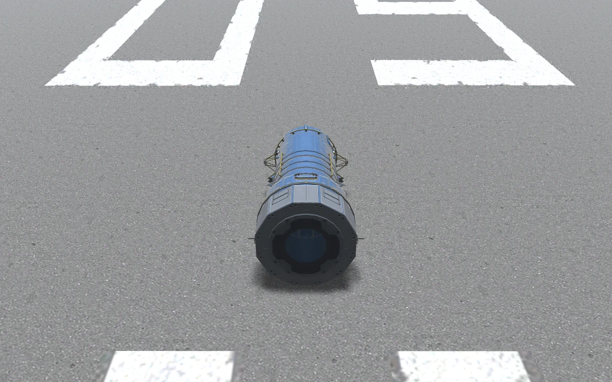
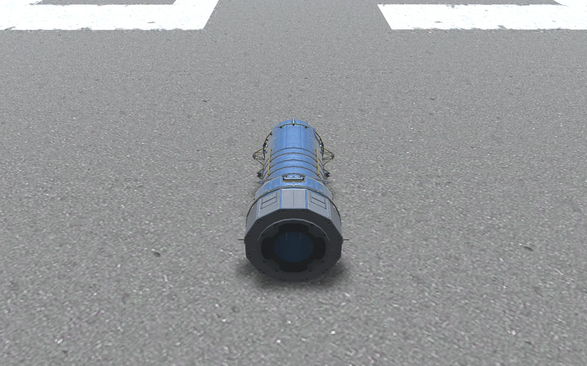
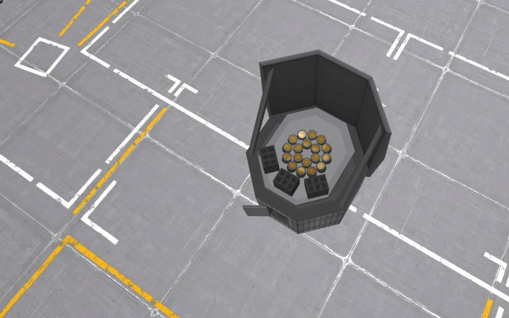
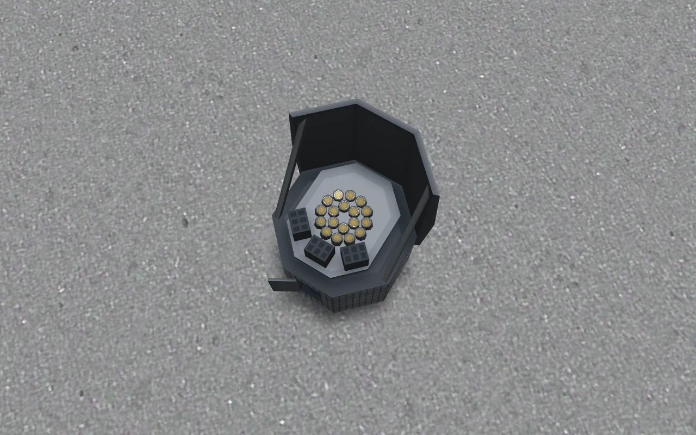

ShineFix
Catalog
Gallery
Evidence
← Back to supported mods
CactEye-2 Orbital Telescope Refocused
Optics verified
Human tested
Version 1.5.4.2
Compatibility evidence
Original screenshot gallery
Parts
CactEye Solar Array
CactEye Telescope Optical Tube

CactEye Telescope Optical Tube
CactEye Telescope small Optical Tube

FungEye Telescope Optics

